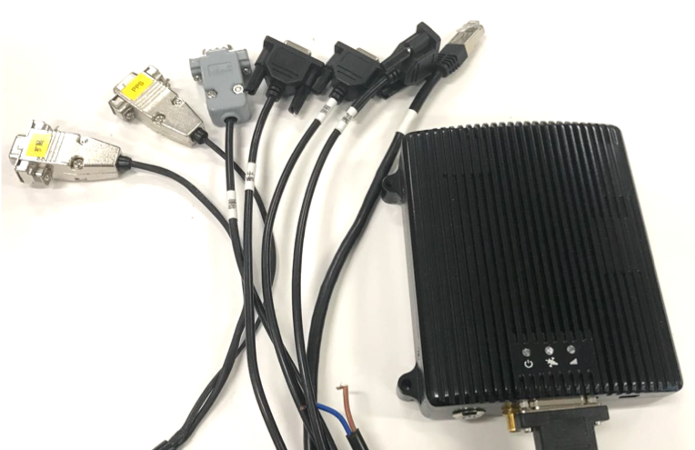

Guide for Navtech NV-GI120
NV-GI120 is a position and orientation system for automatic drive of NAV Technology. With the
high-precision GNSS board card and high-precision MEMS gyro, it has the real-time attitude
and position resolving ability while transmitting the original data of the sensor and board card
for post-processing high-precision resolution.
----Navtech official brochure

NV-GI120 integrates the GNSS receiver and MEMS IMU device into a compact package to provide high precision localization results. It supports dual antenna configuration and multi-frequency reception.
Installation

-
The antennas(antennae) can be connected to the module via SMA connection.
-
A cable bundle is provided with the navigation module. One cable breaks out to multiple connectors to handle communication and configuration.
-
The configuration is similar to what can be done on Novatel devices. Please contact the vendor for detailed instructions.
-
The table for the labels on the break out cable bundle and the corresponding explanations/translations is shown below:
| Labels | Explanations |
|---|---|
| PPS | Pulse per second |
| 导航 | navigation output （replaceable by the ethernet) |
| 板卡 | ------- |
| 里程 | Odometer connection |
| 调试 | configuration |
| 网口 | ethernet |
| Two naked wire | Power （red and blue) |
| 扩展 | Extension |
Disclaimer
This device is Apollo Hardware Development Platform Supported